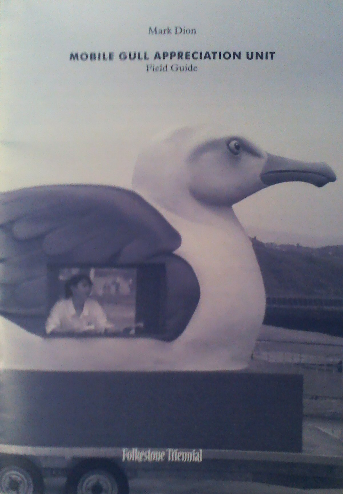

Tuesday, October the 14th, 2014
back to: title, date or indexes
Many thanks to long-time Hooting Yard devotee Jonathan Coleclough, from whom I received in the post today this splendid pamphlet. Mr Coleclough suspects it was published in 2008, though whether or not it is out of print is not clear.
